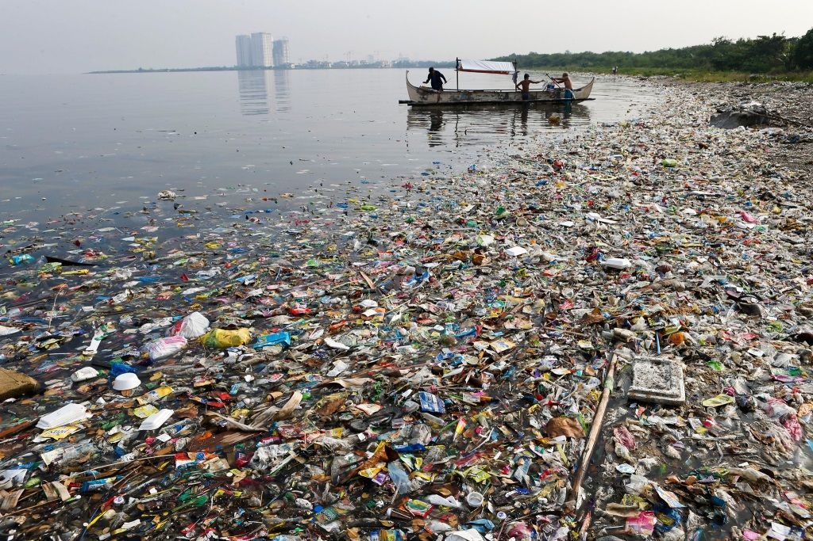
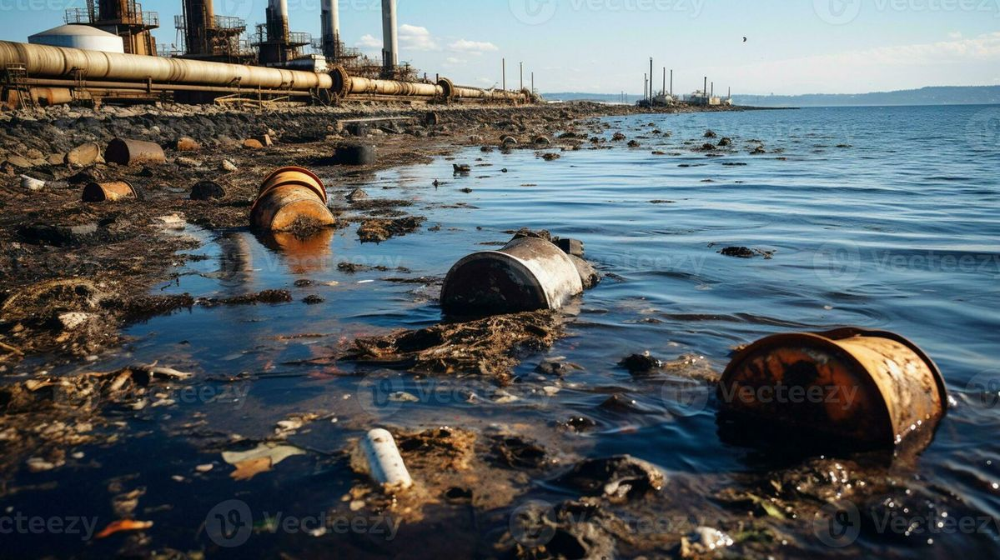
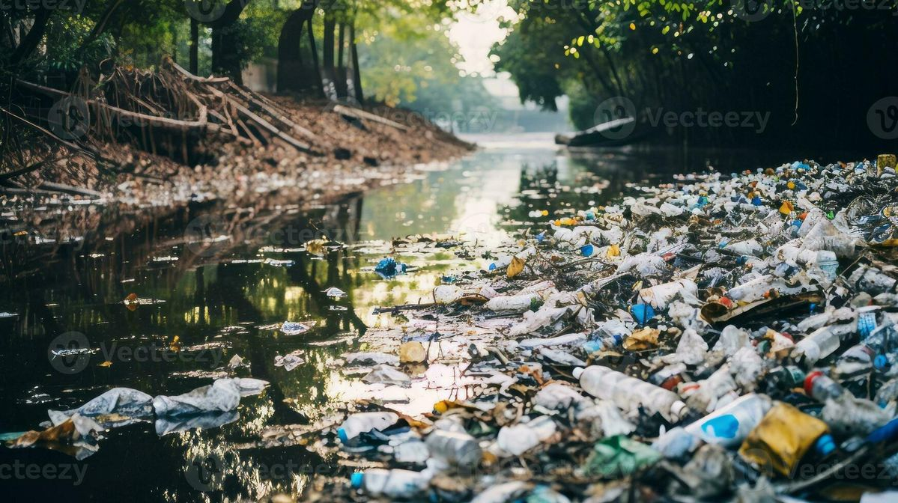
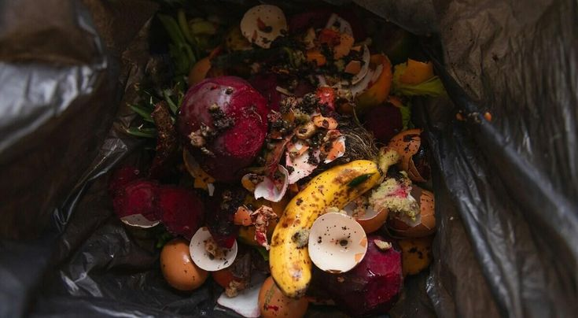

Galeri Pencemaran Lingkungan





Pengertian
Pencemaran adalah masuknya zat berbahaya ke tanah, air, udara, dan suara yang merusak keseimbangan ekosistem. Hal ini dapat menyebabkan kualitas lingkungan turun sampai ke tingkat tertentu yang membuat lingkungan tidak dapat berfungsi sesuai peruntukannya.
Jenis Pencemaran
Tanah 👉 Plastik, Pestisida
Air 👉 Limbah Industri, Minyak
Udara 👉 Asap Kendaraan, Polusi Industri
Suara 👉 Kebisingan Mesin
Sumber Sampah Indonesia (2020)
Penyebab Pencemaran
Limbah rumah tangga dan sisa industri kimia.

Penggunaan pestisida pertanian berlebih.

Akumulasi sampah plastik non-organik.

Hasil pollutan yang masif di area perkotaan.

Pencegahan
Kurangi penggunaan plastik sekali pakai.
Gunakan produk ramah lingkungan dan biodegradable.
Ikut serta dalam program daur ulang dan pengelolaan sampah.
Dukung kebijakan lingkungan yang berkelanjutan.
HIJAU KEMBALI,
BERSIH ABADI
"Langkah kecil kita hari ini adalah warisan besar bagi masa depan."